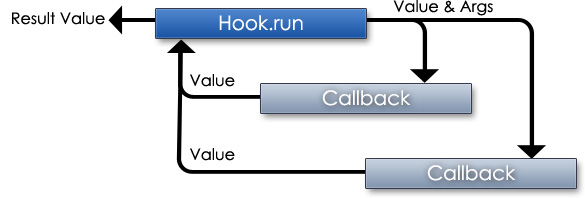

new Hook()
Action and filter hooks
- See Also
-
- Copyright
-
- (c) 2010-2011 Rotorz Limited. All rights reserved.
- License
-
- Licensed under the BSD and GPL licenses (http://capri.rotorz.com/license.html)
- Source:
- ../module/hook.js, Line: 15 ( Module: capri/hook )
Hooks can be used to inject or alter behaviour of application. There are two kinds of hook:
- action
- Inject functionality whenever an action is run.
- filter
- Apply custom filtering to a value. Multiple filters can be assigned to the same hook to achieve various outcomes.
An action will typically run without returning a result whereas the primary purpose of a filter is to return filtered data.
Filters (and actions) only need to return a value if filtering has occurred. Input data continues to be propagated when no value is returned.
Hook execution can be aborted via the hook object. Sometimes it is useful to halt hook early to avoid latter callbacks. Specific hook priorities can be specified as third parameter of capri.Hook.add or capri.Hook.addFilter. This provides some control over hook execution order. Hooks are automatically assigned priority of 10 when parameter is not specified.

Hooks can be removed when they are no longer needed. Sometimes it is useful to temporarily add hook while a particular action is undertaken.
Examples
Ex#1. Apply filtering to title
// Register action hook
capri.Hook.addFilter('my.title', function(title) {
// Change title to upper case
return title.toUpperCase();
});
var title = capri.Hook.filter('my lower case title');
// "MY LOWER CASE TITLE"Ex#2. Terminate action early
// Register filter hook
capri.Hook.add('my.cart.add', function(productId, params, hook) {
// Too much in cart, prevent future action from adding to cart!
if (cart.items.length > cart.maxItems) {
// Abort further processing on hook!
hook.stop = true;
return;
}
});
capri.Hook.run('my.cart.add', 'PROD24');Fields
-
initialValue : mixed
- Initial value that was passed into hook
- Source:
- ../module/hook.js, Line: 74 ( Module: capri/hook )
-
stop : boolean
- Indicates that hook processing is to be aborted
- Source:
- ../module/hook.js, Line: 79 ( Module: capri/hook )
Methods
- <static> add(hook, callback, [priority])
- <static> addFilter(hook, callback, [priority])
- <static> filter(hook, val, [params]) -> {mixed}
- <static> remove(hook, [callback])
- <static> removeFilter(hook, [callback])
- <static> run(hook, val, [params]) -> {mixed}
-
<static> add(hook, callback, [priority])
- Add actionA vendor specific prefix should be devised to avoid conflicting with existing hooks. Hook names are case sensitive and there is no limitation as to what characters can be used. Though it is recommended to avoid all quote characters.Dynamic hooks can be used for a higher degree of granularity.
- See
-
- Source:
- ../module/hook.js, Line: 105 ( Module: capri/hook )
Parameters
Name Type Argument Description hookstring Name of actioncallbackfunction Action callbackprioritynumber <optional> Numeric precedence (defaults to 10)Example
Add action hook
capri.Hook.add('my.blog.before-delete', function(itemId, params) { if (!confirm('Do you really want to delete item?')) return false; }); capri.Hook.add('my.blog.after-delete', function(itemId, params) { alert('Item was deleted!'); }); -
<static> addFilter(hook, callback, [priority])
- Add filteringA vendor specific prefix should be devised to avoid conflicting with existing hooks. Hook names are case sensitive and there is no limitation as to what characters can be used. Though it is recommended to avoid all quote characters.Dynamic hooks can be used for a higher degree of granularity (see Ex#2).
- See
-
- Source:
- ../module/hook.js, Line: 247 ( Module: capri/hook )
Parameters
Name Type Argument Description hookstring Name of filter hookcallbackfunction Filter callbackprioritynumber <optional> Numeric precedence (defaults to 10)Examples
Ex#1. Add filtering on hook
capri.Hook.addFilter('my.user.name', function(name, params) { // Convert name to link? if (params.generateLink === true) return '<a href="profile/' + capri.hyphenCase(name) + '">' + name + '</a>'; // Otherwise, do not alter name! });Ex#2. Dynamic filtering
capri.Hook.addFilter('my.app.skin[velvit].heading', function(heading) { // Replace `<h1` with `<h2` return heading.replace('<h1', '<h2'); }); // Usage for dynamic filtering: heading = Hook.filter('my.app.skin[' + skinName + '].heading', heading); -
<static> filter(hook, val, [params]) -> {mixed}
- Perform filtering on value
- See
-
- Source:
- ../module/hook.js, Line: 304 ( Module: capri/hook )
Parameters
Name Type Argument Description hookstring Name of filtervalmixed Value that is to be filteredparamsobject | null <optional> Additional filter parametersReturns:
- Type
- mixed
Filtered valueExamples
Ex#1. Example of usage
// Usage for non-link: name = capri.Hook.filter('my.user.name', 'Fearne Cotton'); // "Fearne Cotton" // Usage for link: name = capri.Hook.filter('my.user.name', 'Fearne Cotton', { generateLink: true }); // "<a href="profile/fearne-cotton">Fearne Cotton</a>"Ex#2. Apply filtering to article text
articleTitle = capri.Hook.filter('my.blog.title', articleTitle); articleDesc = capri.Hook.filter('my.blog.description', articleDesc); articleBody = capri.Hook.filter('my.blog.body', articleBody); -
<static> remove(hook, [callback])
- Remove action
- See
-
- Source:
- ../module/hook.js, Line: 145 ( Module: capri/hook )
Parameters
Name Type Argument Description hookstring Name of filtercallbackfunction | null <optional> Specific callback or null to remove all callbacks from hook.Examples
Ex#1. Remove specific action hook
// Disable confirmation alert message capri.Hook.remove('my.blog.after-delete', callbackFunction);Ex#2. Remove all action hooks
// Disable confirmation alert message plus any other hooks capri.Hook.remove('my.blog.after-delete'); -
<static> removeFilter(hook, [callback])
- Remove filtering
- See
-
- Source:
- ../module/hook.js, Line: 285 ( Module: capri/hook )
Parameters
Name Type Argument Description hookstring Name of filtercallbackfunction | null <optional> Specific callback or null to remove all callbacks from hook.Examples
Ex#1. Remove specific filter hook
capri.Hook.removeFilter('my.user.name', callbackFunction);Ex#2. Remove all filter hooks
capri.Hook.removeFilter('my.user.name'); -
<static> run(hook, val, [params]) -> {mixed}
- Run action
- See
-
- Source:
- ../module/hook.js, Line: 183 ( Module: capri/hook )
Parameters
Name Type Argument Description hookstring Name of actionvalmixed Value that can be filteredparamsobject | null <optional> Additional action parametersReturns:
- Type
- mixed
Filtered valueExample
Run action before and after activity
if (capri.Hook.run('my.blog.before-delete', itemId) !== false) { jQuery.ajax({ url: deleteActionUrl + '&item=' + itemId, success: function() { capri.Hook.run('my.blog.after-delete', itemId); }, error: function() { capri.Hook.run('my.blog.delete-failed', itemId); } }); }